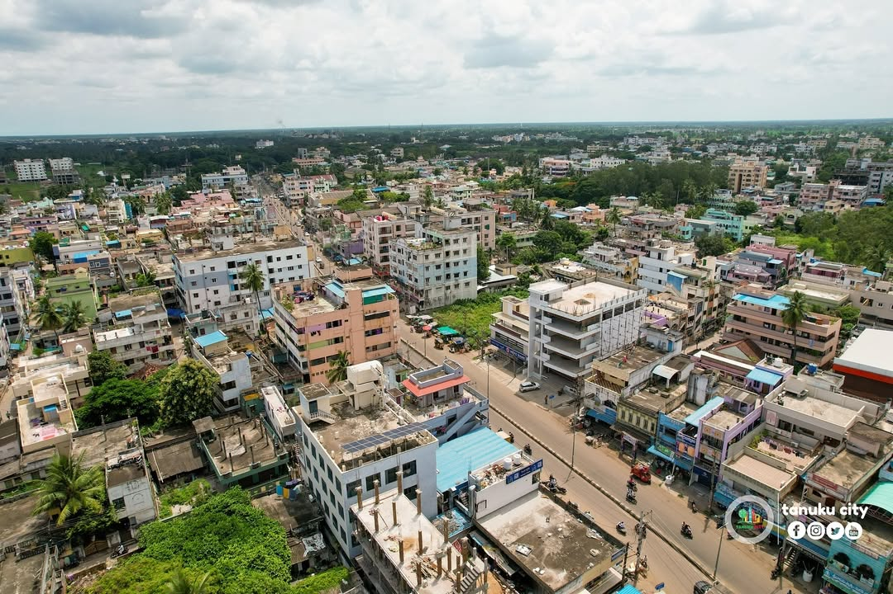

Welcome to the place of beauty, peace and harmony It is the birthpace of some great persons, "ADIKAVI NANNAYYA" and "DEVARAKONDA BALA GANGADHAR TILAK"
HISTORY: The old name of Tanuku is Tarakapuri, ruled by Tarakasura.
The city is known for its rich cultural heritage and bustling economic activity, Tanuku is a place where tradition meets modernity. It has a population that embraces its historical roots while looking forward to the future.
image:SMVM college
EDUCATION:There are many educational institutions from kg to pg. SMVM, SKSD colleges are very famous in the district.

Tanuku is one of the cleanest municipality in AP. Kesava Swamy Temple and Danamma Thalli Temple are famous around the State.
DEVELOPMENT: Tanuku is the fastest growing city in entire Godavari Districts. There are more than 100 industries here.
image: Andhra Sugars
DO YOU KNOW? Tanuku is the only place in entire "ASIA" where Rocket Fuel is made. It is made in the Andhra Sugars pvt limited. image: NTR park
There are many beautifu paces in tanuku to visit and enjoy your free time.
image: NH 16
CONNECTIVITY: There is no worry of connectivity near tanuku.Chennai-Kolkata Highway, NH 16 passes through Tanuku. A spur road of NH 16, NH 216A passes through Tanuku and connects Rajamahendravaram to Eluru.
image: Old Town
image: Pydiparru Junction
PHOTO CREDITS: tanuku city SUBMITTED BY > NAME: CH. KRANTHI KUMAR
SECTION: CSE-1
ROLL NO: 324103310050